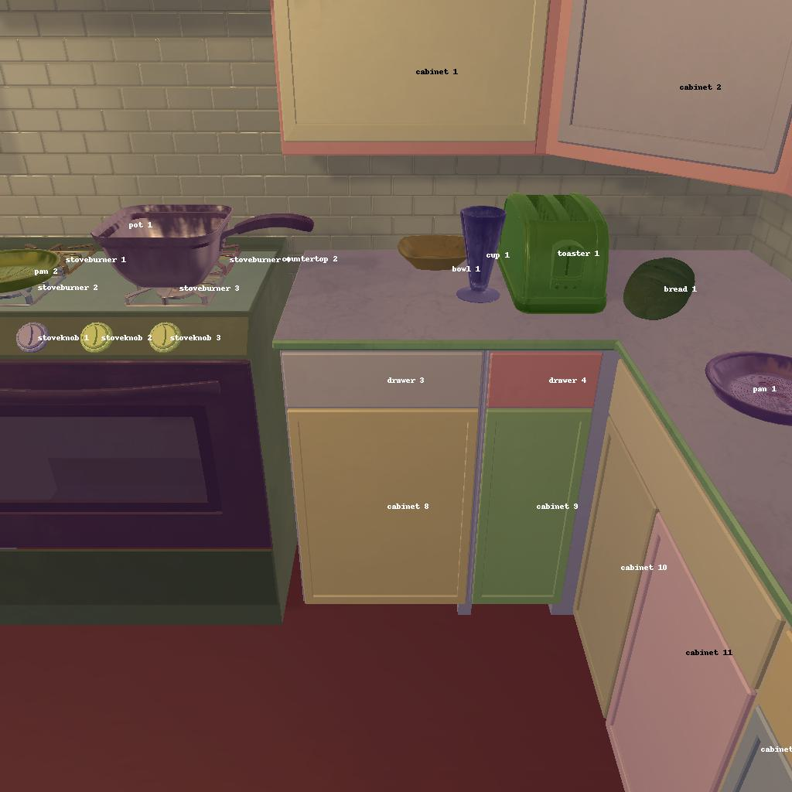
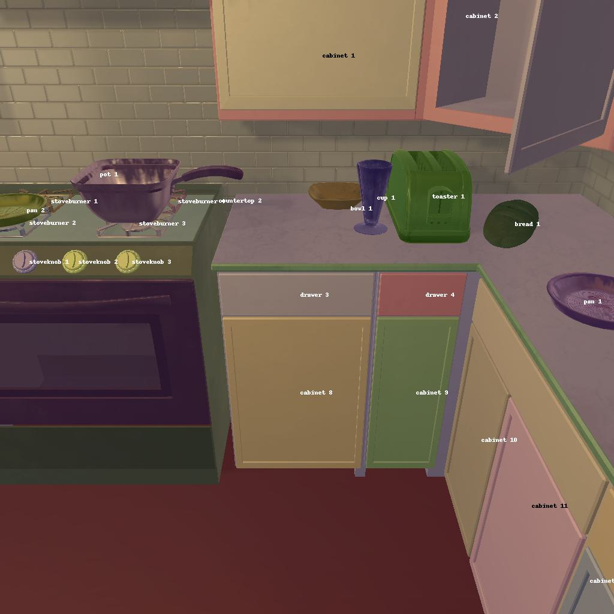

---------------------------------------------------------task: 10---------------------------------------------------------
--------------------------------------------------------------------------------------------------------------------------------------------------------------------
--------------------------------------------------------------------------------------------------------------------------------------------------------------------
Step:--------------------------------------------------------------------------3-------------------------------------------------------------------------------
----------------------------------------
VLM Prompt:
Image1:
Image2:
**Instruction**
1. Analyze the provided image to identify all visible household objects, focusing on those relevant to the task description "clean some plate and put it in countertop."
2. Use the analysis of the image and the task hint "The agent must find an object of the desired type, pick it up, go to a sink or a basin, clean the object with a sink or basin, and then find the correct location to place it and put it down there. The agent does not need to use soap bottle or faucet to clean the object, and the agent just needs to do action that is "clean the object with the sink or sink basin"." to answer the question: what is the most reasonable action in the choices for the task description "clean some plate and put it in countertop"?
4. Decide and write the answer using the template: The answer is: (i): , where i is the real number. If there is no desired object in the image, search every place based on **Initial Observation** to find the object. And if no one is exactly correct, choose a similar answer.
**Initial Observation**
You are in the middle of a room. Looking quickly around you, you can see cabinet (1-20), toaster (1), microwave (1), garbagecan (1), countertop (1-2), drawer (1-4), stoveburner (1-4), sinkbasin (1), sink (1), fridge (1), diningtable (1), coffeemachine (1)
**Answer Choices**
(1): go to cabinet 3
(2): go to toaster 1
(3): go to cabinet 4
(4): go to cabinet 5
(5): go to microwave 1
(6): go to garbagecan 1
(7): go to countertop 1
(8): go to drawer 1
(9): go to cabinet 6
(10): go to cabinet 7
(11): go to drawer 2
(12): go to stoveburner 1
(13): go to stoveburner 2
(14): go to countertop 2
(15): go to cabinet 8
(16): go to cabinet 9
(17): go to cabinet 10
(18): go to drawer 3
(19): go to drawer 4
(20): go to stoveburner 3
(21): go to stoveburner 4
(22): go to cabinet 11
(23): go to cabinet 12
(24): go to cabinet 13
(25): go to cabinet 14
(26): go to sinkbasin 1
(27): go to sink 1
(28): go to cabinet 15
(29): go to fridge 1
(30): go to cabinet 16
(31): go to cabinet 17
(32): go to cabinet 18
(33): go to cabinet 19
(34): go to diningtable 1
(35): go to coffeemachine 1
(36): go to cabinet 20
(37): close cabinet 2
(38): take pot 1 from cabinet 2
(39): take pan 1 from cabinet 2
(40): take bread 1 from cabinet 2
(41): take cup 1 from cabinet 2
(42): take pan 2 from cabinet 2
(43): take bowl 1 from cabinet 2
(44): take stoveknob 1 from cabinet 2
(45): take stoveknob 2 from cabinet 2
(46): take stoveknob 3 from cabinet 2
(47): examine cabinet 2
**Answer**
Let's think step by step by following the instructions.
----------------------------------------
----------------------------------------
Original Response:
First, we need to identify a plate to clean. From the initial observation, we know there are multiple cabinets where plates are typically stored.
Looking at the provided images, we can see that cabinet 2 is open, and there is a visible object labeled "bowl 1" inside, which is the closest object to a plate that we can clean.
Now, following the task hint, we know that we don't need to use soap or faucet, but we do need to go to a sink or basin to clean the object.
Therefore, the most reasonable action from the choices provided, related to the task description "clean some plate and put it in countertop," would be to first take the bowl (since there's no plate visible) from the cabinet 2, clean it in the sink or sink basin, and then place it on the countertop.
The answer is: (43): take bowl 1 from cabinet 2.
----------------------------------------
----------------------------------------
>>> Refine Original VLM Response and Get Pure Action: take bowl 1 from cabinet 2
----------------------------------------
-----------------------------------------------------------------
Running time: 8.658864498138428 seconds
Total Money: 4.3034799999999995
-----------------------------------------------------------------
-----------------------------------------------------------------
Text Observation:You pick up the bowl 1 from the cabinet 2.
-----------------------------------------------------------------
UNSUCCEED